최소 sample_index 규칙을 픽셀 읽기 전에 봉인했습니다. 12 bucket 중 11개 고유 crop과 빈 bucket 1개입니다. 원 q/L·RGB96를 유지했고 새 CF 학습이미지가 아닙니다. SOURCE 내부 DEV는 재사용·노출된 자료이며 fresh blind 또는 현재 실사 평가가 아닙니다.
cyan은 원 q(47.5,47.5), magenta는 saved teacher reference를 원 crop에 대수적으로 표시한 것입니다. SYN intended-native witness0와 YCB associated-r의 label을 구분합니다. 화면의 다른 물체·q-owner만으로 D/E를 새로 판정하지 않습니다. Reference recrop·좌표 보정·새 모델 forward·원인 인증은 없습니다.
사전 사례 ID · 수치·입력/PNG SHA · CSV
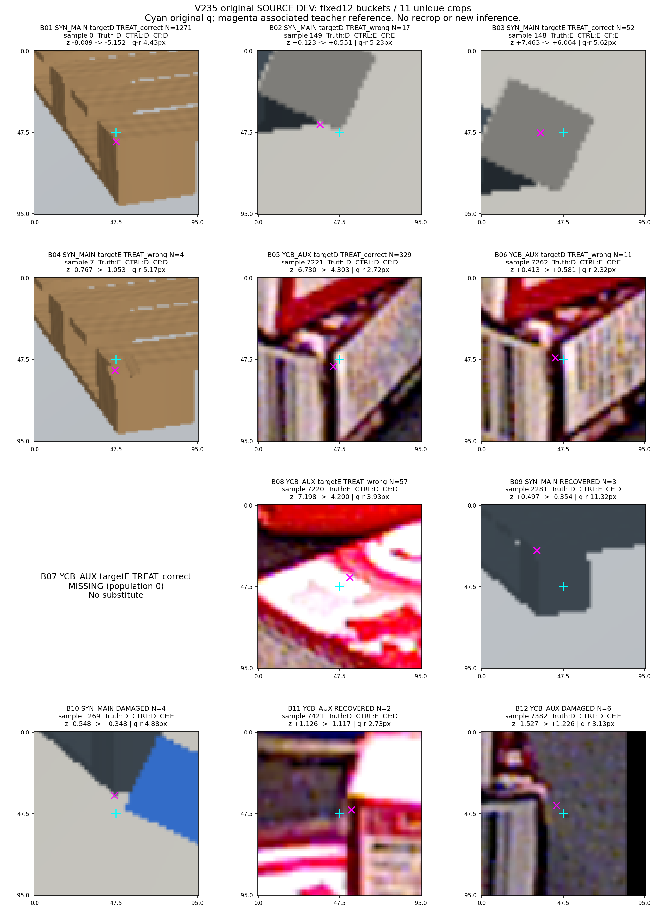
sample_index=0 / V183_SELF_0000_NATIVE0_NOMINAL
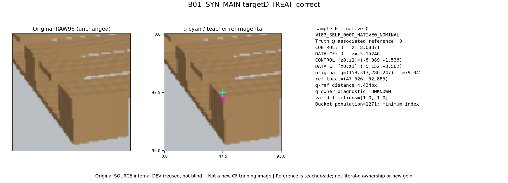
sample_index=149 / V183_SELF_0021_NATIVE2_NOMINAL
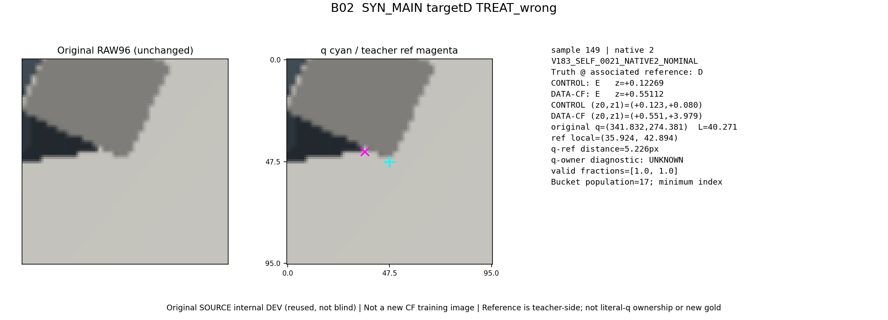
sample_index=148 / V183_SELF_0021_NATIVE1_NOMINAL
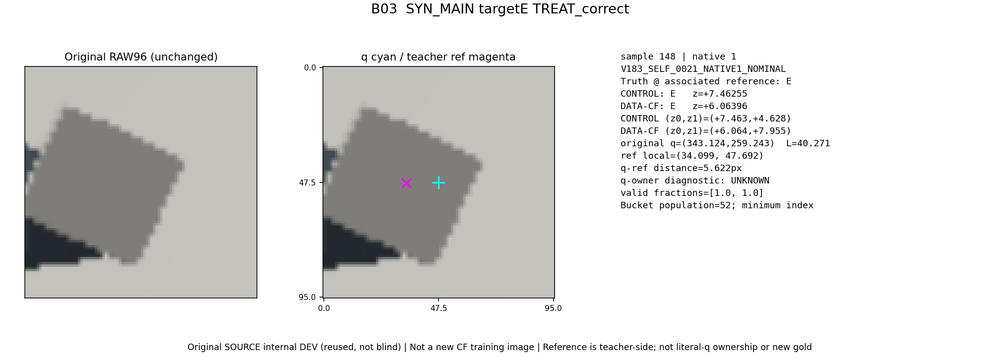
sample_index=7 / V183_SELF_0001_NATIVE0_NOMINAL
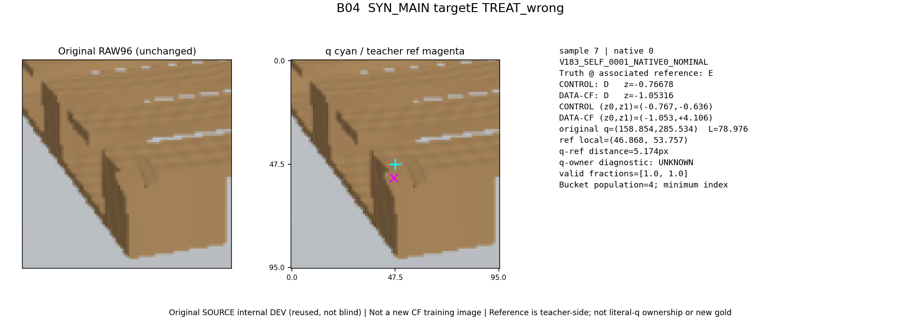
sample_index=7221 / Y109_SOURCE_000700:aux5
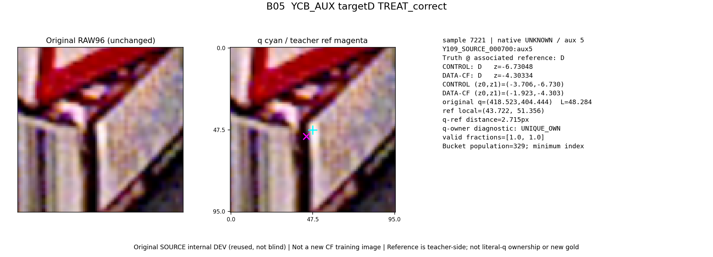
sample_index=7262 / Y109_SOURCE_000720:aux5
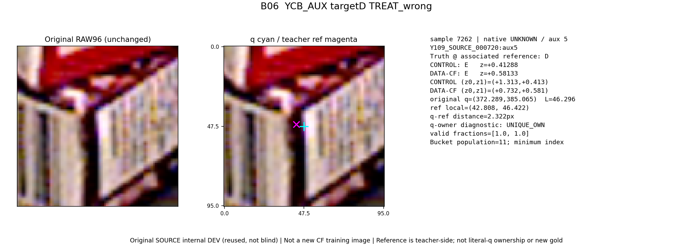
해당 bucket은 비어 있어 대체 사례를 만들지 않았습니다.
sample_index=7220 / Y109_SOURCE_000700:aux3
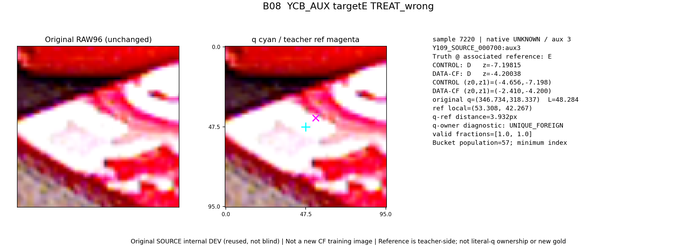
sample_index=2281 / V183_SELF_0391_NATIVE0_NOMINAL
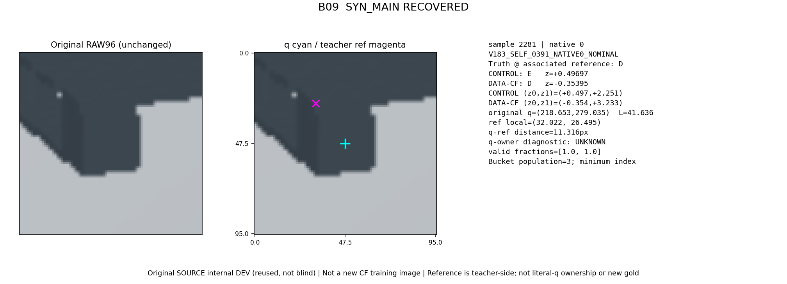
sample_index=1269 / V183_SELF_0198_NATIVE3_NOMINAL
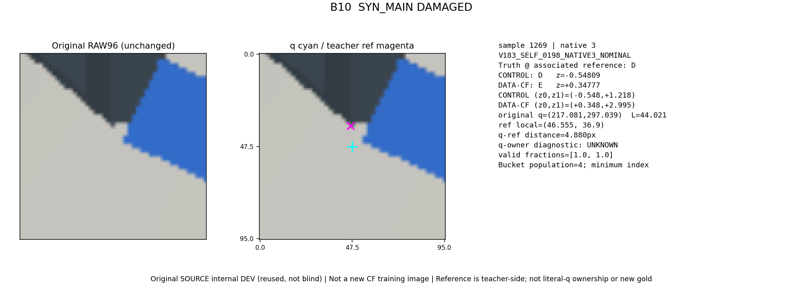
sample_index=7421 / Y109_SOURCE_000827:aux2
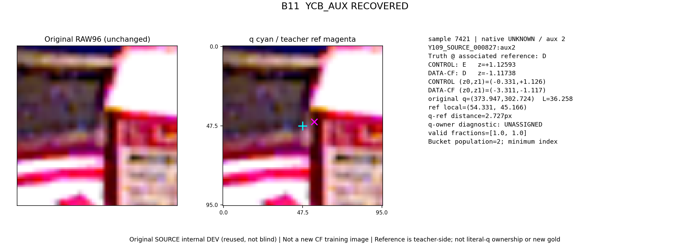
sample_index=7382 / Y109_SOURCE_000800:aux5
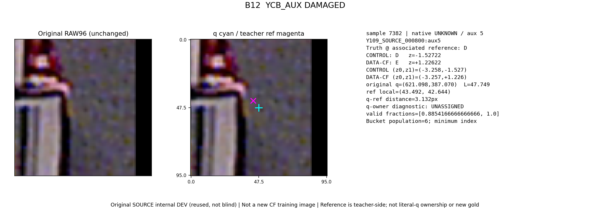